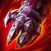
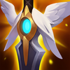

Peleador
Dificultad Moderada
HABILIDADES


PASIVA • HEMORRAGIA
Los ataques y habilidades que infligen daño de Darius hacen sangrar a los enemigos, lo que inflige daño físico prolongado. Este efecto tiene un límite de acumulaciones. Al llegar al máximo de acumulaciones, Darius obtiene Poder Noxiano durante unos segundos, lo cual le otorga daño de ataque y aplica acumulaciones completas de Hemorragia en lugar de 1.
1 • DIEZMAR
Darius reúne fuerzas y lanza un ataque circular amplio con su hacha. Los enemigos alcanzados por el filo recibirán más daño que los alcanzados por el mango. Darius se cura con los impactos a campeones enemigos con el filo del hacha y aplica Hemorragia.
2 • GOLPE INCAPACITANTE
Darius potencia su siguiente ataque para infligir daño adicional con una gran ralentización.
3 • APREHENDER
Darius afila su hacha, lo que permite que su daño físico ignore parte de la armadura de su objetivo de manera pasiva. Al activar la habilidad, Darius arrastra a sus enemigos con el gancho de su hacha y los atrae hacia él.
DEFINITIVA • GUILLOTINA NOXIANA
Darius salta hacia un campeón enemigo y le asesta un golpe letal que inflige daño verdadero. El daño aumenta con cada acumulación de Hemorragia que tenga el objetivo. Si Guillotina Noxiana causa un asesinato, su enfriamiento se restablece, otorga Poder Noxiano y causa que los súbditos y monstruos cercanos huyan.
CONFIGURACIÓN
OBJETOS
-

Fuerza de la Trinidad
3533+200 Vida Máxima
+20 Daño de Ataque
+30% Velocidad de Ataque
+25 Aceleración de Habilidad
FERVOR: +5% de Velocidad de Movimiento.
ESPADA ENCANTADA: Usar una habilidad provoca que el siguiente ataque dentro de 10 seg infija daño físico adicional igual al 200% de Daño de Ataque básico. (1.5 seg de Enfriamiento).
El daño se reduce contra estructuras.
RABIA: Los ataques otorgan 20 de Velocidad de Movimiento y los asesinatos 60 de Velocidad de Movimiento durante 2 seg. Los efectos adicionales no se acumulan. Los campeones a distancia obtienen la mitad de las cantidades. -

Guantelete de Sterak
3200+400 Vida Máxima
SEVERO: +50% de Daño de Ataque básico. Solo aplica para campeones cuerpo a cuerpo.
SALVAVIDAS: El daño que te deje con menos del 35% de Vida te otorga un escudo igual al 75% de Vida adicional que dacae a lo largo de 3 seg (90 seg de Enfriamiento).
FURIA DE STERAK: Activar Salvavidas aumenta tu tamaño y te otorga un 30% de Tenacidad durante 8 seg. -

Danza de la Muerte
3000+300 Vida Máxima
+35 Daño de Ataque
+15 Aceleración de Habilidad
BAILE: +10% de Vampirismo Físico.
CAUTERIZAR: Un 30% del daño recibido se inflige como efecto de Sangrado durante 3 seg. -

Apariencia Espiritual
2900+350 Vida Máxima
+100% Regeneración de Vida
+45 Resistencia Mágica
+10 Aceleración de Habilidad
BENDITO: Aumenta todos los efectos de curación, regeneración y de drenar sobre ti mismo en un 30%.
-

Ángel Guardián
3100+40 Daño de Ataque
+40 Armadura
RESUCITAR: Tras recibir daño letal, te restaura un 50% de la Vida básica y un 30% de Maná tras 4 seg de estasis. (210 seg de enfriamiento).
-

Punteras de Acero Revestidas
1000CALZADO: +40 de Velocidad de Movimiento.
MEJORADO: +15 de Armadura.
BLOQUEADO: Bloquea un 15% del daño de ataques.
CARRERA (ACTIVA): Aumenta la Velocidad de Movimiento un 15% durante 3 seg. Infligir o recibir daño de campeones desactiva los efectos de Carrera. (60 seg de enfriamiento). -

Encantamiento de Protocinturón
500PROTOCINTURÓN (ACTIVA): Te desplazas hacia adelante y liberas misiles en un cono que infligen 75-145 de daño mágico. Si más de un misil alcanza campeones o monstruos, los misiles adicionales solo infligen un 10% de daño. (60 seg de enfriamiento).
RUNAS Y HECHIZOS
-

Conquistador
Obtienes acumulaciones de fuerza adaptable al atacar a un campeón con habilidades o ataques separados. Se acumula hasta 5 veces. Al alcanzar el máximo de acumulaciones, inflige daño adaptable adicional a campeones.
POR ACUMULACIÓN: 2 - 6 de Daño de Ataque adicional o 3 - 9 de Poder de Habilidad durante 6 seg.
EFECTO ADICIONAL CON EL MÁXIMO DE ACUMULACIONES: Cuerpo a cuerpo: 10% | A distancia: 7% de daño adaptable adicional a campeones. -
Triunfo
Los derribos de campeones restauran un 10% de tu Vida faltante. Inflige 3% de daño adicional a enemigos con menos del 35% de Vida.
-

Coraza Ósea
Después de recibir daño de un campeón, las siguientes 3 habilidades o ataques de un campeón contra ti dentro de 1.5 seg infligen de 30 a 60 (basado en nivel) menos daño (45 seg de Enfriamiento).
-

Dulces Frutos
Aumenta la curación de Frutamiel en un 25%. Cada vez que tú o un aliado cercano coma una Frutamiel, obtienes 20 de oro.
-

Barrera
ENFRIAMIENTO: 120 seg.
Obtienes un escudo que absorbe 115 de daño (115-465 basado en nivel) durante 2 seg. -

Destello
ENFRIAMIENTO: 150 seg.
Te teletransportas una distancia corta hacia delante o hacia la dirección objetivo.
CÓMO JUGAR DARIUS
Darius es un luchador de primera línea. Es genial en todas las etapas del juego, pero cuanto más tarde va, mejor se vuelve para Darius, ya que puede hacer más daño y tener mucha más salud para ser un tanque de primera línea. También tiene un potencial loco de 1 contra 1 al poder atraer a las personas con Aprehender (tercera habilidad) y acumular Hemorragia (pasiva) para infligir mucho daño.